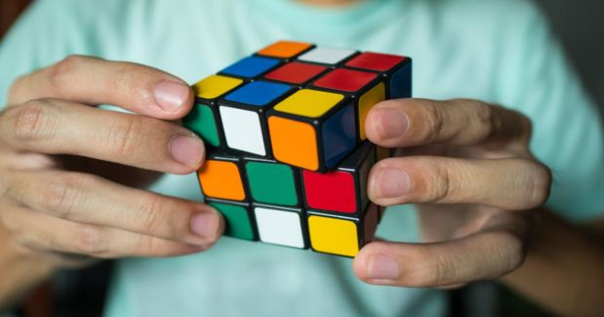

Cubos Rubik

Pues mi gusto por los cubos magicos o mejor conocidos como
Rubik empezo por tercero de secundaria, algun dia un amigo
llevo el suyo y me esnseño como armarlo despues de eso solo
queria coleccionar mas y mas.
Actualmente cuento con una coleccion de aprox 15 cubos entre
los cuales se encuentran dodecaedros y piramides.
Mi record en el cubo 3x3 es de 35 segundos sin embargo mi mejor
record es la piramide con un record de 9 segundos.